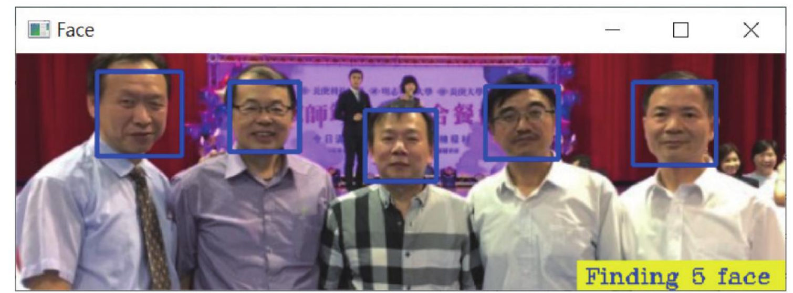
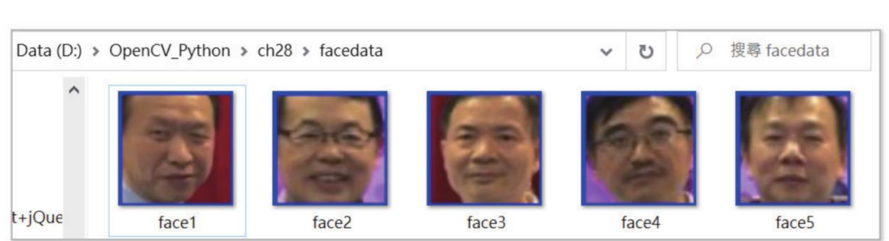

第 28 章
摄影机与人脸档案
撷取相同大小的人脸存档 · 使用摄影机撷取人脸影像 · 自动化摄影和撷取人像 · 多张人脸资料建立
第 26 章介绍了使用 OpenCV 的摄影功能，第 27 章介绍了人脸侦测，本章将对这 2 个功能做整合性应用解说。当读者了解本章内容后，下一章内容将正式介绍人脸辨识。
28-1
撷取相同大小的人脸存档
第 27 章介绍了侦测人脸的方法，由于所侦测的人脸所回传的宽（w）和高（h）每次大小不一定相同，未来做人脸辨识时所需的影像一定是宽（w）和高（h）相同的影像，才可以做影像识别，这时可以使用 OpenCV 的 resize() 函数处理。
有了相同大小的人脸影像后，可以使用 Numpy 的切片观念将影像撷取，最后将这些影像存起来，以供未来影像辨识之资料库使用。
程式实例 ch28_1.py：扩充设计 ch27_2.py，使用 g5.jpg 辨识人脸，同时将人脸使用宽与高皆是 160 像素点，储存在 ch28\facedata 资料夹。
第 5～6 列是检查 facedata 资料夹是否存在，如果不存在就建立此资料夹。
# ch28_1.py
import cv2
import os
if not os.path.exists("facedata"): # 如果不存在资料夹
os.mkdir("facedata") # 就建立 facedata
pictPath = r'G:\opencv\data\haarcascade_frontalface_alt2.xml'
face_cascade = cv2.CascadeClassifier(pictPath) # 建立辨识档案物件
img = cv2.imread("g5.jpg") # 读取影像
faces = face_cascade.detectMultiScale(img, scaleFactor=1.1,
minNeighbors=3, minSize=(20, 20)) # 侦测影像
# 标注右下角底色是黄色
cv2.rectangle(img, (img.shape[1]-140, img.shape[0]-20),
(img.shape[1], img.shape[0]), (0, 255, 255), -1)
# 标注找到多少的人脸
cv2.putText(img, "Finding " + str(len(faces)) + " face",
(img.shape[1]-135, img.shape[0]-5),
cv2.FONT_HERSHEY_COMPLEX, 0.5, (255, 0, 0), 1)
# 将人脸框起来，由于有可能找到好几个脸所以用回圈绘出来
# 同时将影像储存在 facedata 资料夹，但是必须先建立此资料夹
num = 1 # 档名编号
for (x, y, w, h) in faces:
cv2.rectangle(img, (x, y), (x+w, y+h), (255, 0, 0), 2) # 蓝色框住人脸
filename = "facedata\\face" + str(num) + ".jpg" # 路径 + 档名
imageCrop = img[y:y+h, x:x+w] # 裁切
imageResize = cv2.resize(imageCrop, (160, 160)) # 重制大小
cv2.imwrite(filename, imageResize) # 储存影像
num += 1 # 档案编号
cv2.imshow("Face", img) # 显示影像
cv2.waitKey(0)
cv2.destroyAllWindows()

侦测到的人脸外框大小不一致。

ch28\facedata 资料夹中保存 5 张由 ch28_1.py 裁切并缩放为 160 × 160 的人脸影像。
28-2
使用摄影机撷取人脸影像
这一节叙述的是程式设计技巧，所以直接使用程式实例解说。
程式实例 ch28_2.py：使用摄影机撷取人脸影像。这个程式在执行时会要求输入英文名字，然后按 A 或 a 可以拍照，最后将所拍的照片（facePhoto）和人脸影像（faceName）存在 ch28_2 资料夹，以所输入的名字和 jpg 为副档名储存。
# ch28_2.py
import cv2
import os
if not os.path.exists("ch28_2"): # 如果不存在 ch28_2 资料夹
os.mkdir("ch28_2") # 就建立 ch28_2
name = input("请输入英文名字：")
faceName = "ch28_2\\" + name + ".jpg" # 人脸影像
facePhoto = "ch28_2\\" + name + "photo.jpg" # 拍摄影像
pictPath = r'C:\opencv\data\haarcascade_frontalface_alt2.xml'
face_cascade = cv2.CascadeClassifier(pictPath) # 建立辨识档案物件
cap = cv2.VideoCapture(0) # 开启摄影机
while cap.isOpened(): # 摄影机有开启就执行回圈
ret, img = cap.read() # 读取影像
cv2.imshow("Photo", img) # 显示影像在 OpenCV 视窗
if ret == True: # 读取影像如果成功
key = cv2.waitKey(200) # 0.2 秒检查一次
if key == ord("a") or key == ord("A"): # 如果按 A 或 a
cv2.imwrite(facePhoto, img) # 将影像写入 facePhoto
break
cap.release() # 关闭摄影机
img = cv2.imread(facePhoto) # 读取影像 facePhoto
faces = face_cascade.detectMultiScale(img, scaleFactor=1.1,
minNeighbors=3, minSize=(20, 20))
# 将人脸框起来
for (x, y, w, h) in faces:
cv2.rectangle(img, (x, y), (x+w, y+h), (255, 0, 0), 2) # 蓝色框住人脸
imageCrop = img[y:y+h, x:x+w] # 裁切
imageResize = cv2.resize(imageCrop, (160, 160))# 重制大小
cv2.imwrite(faceName, imageResize) # 储存人脸影像
cv2.imshow("FaceRecognition", img)
cv2.waitKey(0)
cv2.destroyAllWindows()
下列是要求输入英文姓名的过程。
==================== RESTART: D:/OpenCV_Python/ch28/ch28_2.py ====================
请输入英文名字：hung
当进入摄影机后，可以按 A 或 a 键执行拍照，下列是拍照后可以看到人脸被框住的影像。
最后检查 ch28\ch28_2 资料夹可以看到所储存的影像。
28-3
自动化摄影和撷取人像
这一节也是叙述程式设计技巧，所以直接使用程式实例解说。
程式实例 ch28_3.py：使用摄影机撷取人脸影像。这个程式在执行时会要求输入英文名字，然后可以看到摄影机拍摄影像时，人脸已经主动被框住了，按 A 或 a 可以拍照，最后将所拍的人脸影像（faceName）存在 ch28_3 资料夹，以所输入的名字和 jpg 为副档名储存。
注：这个程式无法按其他键关闭摄影机，这将是读者的习题。
# ch28_3.py
import cv2
import os
if not os.path.exists("ch28_3"): # 如果不存在 ch28_3 资料夹
os.mkdir("ch28_3") # 就建立 ch28_3
name = input("请输入英文名字：")
faceName = "ch28_3\\" + name + ".jpg" # 人脸影像
pictPath = r'C:\opencv\data\haarcascade_frontalface_alt2.xml'
face_cascade = cv2.CascadeClassifier(pictPath) # 建立辨识档案物件
cap = cv2.VideoCapture(0) # 开启摄影机
while cap.isOpened(): # 摄影机有开启就执行回圈
ret, img = cap.read() # 读取影像
faces = face_cascade.detectMultiScale(img, scaleFactor=1.1,
minNeighbors=3, minSize=(20, 20))
for (x, y, w, h) in faces:
cv2.rectangle(img, (x, y), (x+w, y+h), (255, 0, 0), 2) # 蓝色框住人脸
cv2.imshow("Photo", img) # 显示影像在 OpenCV 视窗
if ret == True: # 读取影像如果成功
key = cv2.waitKey(200) # 0.2 秒检查一次
if key == ord("a") or key == ord("A"): # 如果按 A 或 a
imageCrop = img[y:y+h, x:x+w] # 裁切
imageResize = cv2.resize(imageCrop, (160, 160)) # 重制大小
cv2.imwrite(faceName, imageResize) # 储存人脸影像
break
cap.release() # 关闭摄影机
cv2.waitKey(0)
cv2.destroyAllWindows()
==================== RESTART: D:/OpenCV_Python/ch28/ch28_3.py ====================
请输入英文名字：hung
当进入摄影机后，人脸自动被侦测同时被框住，可以按 A 或 a 键执行拍照，下列是截图的影像。
最后检查 ch28\ch28_3 资料夹可以看到所储存的影像。
28-4
半自动拍摄多张人脸的实例
在执行人脸辨识前，最好可以针对人脸建立多个影像，方便训练人脸资料库。下列实例是设计手动拍摄多张人脸的实例。
程式实例 ch28_4.py：扩充设计 ch28_3.py，当按下 A 或 a 键时可以拍照，同时将所拍的照片用加上编号方式储存。每次拍摄成功会在 Python Shell 视窗显示拍摄第几次成功字串，当拍摄 5 次后可以自动结束程式。
# ch28_4.py
import cv2
import os
if not os.path.exists("ch28_4"): # 如果不存在 ch28_4 资料夹
os.mkdir("ch28_4") # 就建立 ch28_4
name = input("请输入英文名字：")
pictPath = r'C:\opencv\data\haarcascade_frontalface_alt2.xml'
face_cascade = cv2.CascadeClassifier(pictPath) # 建立辨识档案物件
cap = cv2.VideoCapture(0) # 开启摄影机
num = 1 # 影像编号
while cap.isOpened(): # 摄影机有开启就执行回圈
ret, img = cap.read() # 读取影像
faces = face_cascade.detectMultiScale(img, scaleFactor=1.1,
minNeighbors=3, minSize=(20, 20))
for (x, y, w, h) in faces:
cv2.rectangle(img, (x, y), (x+w, y+h), (255, 0, 0), 2) # 蓝色框住人脸
cv2.imshow("Photo", img) # 显示影像在 OpenCV 视窗
if ret == True: # 读取影像如果成功
key = cv2.waitKey(200) # 0.2 秒检查一次
if key == ord("a") or key == ord("A"): # 如果按 A 或 a
imageCrop = img[y:y+h, x:x+w] # 裁切
imageResize = cv2.resize(imageCrop, (160, 160)) # 重制大小
faceName = "ch28_4\\" + name + str(num) + ".jpg" # 储存影像
cv2.imwrite(faceName, imageResize) # 储存人脸影像
if num < 5:
print("拍摄第" + str(num) + "次人脸成功")
num += 1
else:
print("拍摄第" + str(num) + "次人脸成功")
break
cap.release() # 关闭摄影机
cv2.destroyAllWindows()
有关拍摄的影像可以参考 ch28_3.py，下列是 Python Shell 视窗的执行结果。
==================== RESTART: D:/OpenCV_Python/ch28/ch28_4.py ====================
请输入英文名字：hung
拍摄第1次人脸成功
拍摄第2次人脸成功
拍摄第3次人脸成功
拍摄第4次人脸成功
拍摄第5次人脸成功
下列是 ch28\ch28_4 资料夹的结果。
28-5
全自动拍摄人脸影像
我们也可以建立自动化拍摄环境，连续自动拍摄人脸影像。这个时候下列指令将是连续拍摄的关键：
cv2.waitKey(200)
前面的实例 waitKey() 函数的参数皆使用 200，这表示 0.2 秒检查一次键盘输入。我们也可以直接用此时间拍摄储存一次人脸。
程式实例 ch28_5.py：重新设计 ch28_4.py，每隔 0.2 秒拍摄一次人脸并储存，储存的人脸张数可以由 Python Shell 视窗设定，当达到拍摄张数后，程式自动结束。
# ch28_5.py
import cv2
import os
if not os.path.exists("ch28_5"): # 如果不存在 ch28_5 资料夹
os.mkdir("ch28_5") # 就建立 ch28_5
name = input("请输入英文名字：")
total = eval(input("请输入人脸需求数量："))
pictPath = r'C:\opencv\data\haarcascade_frontalface_alt2.xml'
face_cascade = cv2.CascadeClassifier(pictPath) # 建立辨识档案物件
cap = cv2.VideoCapture(0) # 开启摄影机
num = 1 # 影像编号
while cap.isOpened(): # 摄影机有开启就执行回圈
ret, img = cap.read() # 读取影像
faces = face_cascade.detectMultiScale(img, scaleFactor=1.1,
minNeighbors=3, minSize=(20, 20))
for (x, y, w, h) in faces:
cv2.rectangle(img, (x, y), (x+w, y+h), (255, 0, 0), 2) # 蓝色框住人脸
cv2.imshow("Photo", img) # 显示影像在 OpenCV 视窗
key = cv2.waitKey(200)
if ret == True: # 读取影像如果成功
imageCrop = img[y:y+h, x:x+w] # 裁切
imageResize = cv2.resize(imageCrop, (160, 160)) # 重制大小
faceName = "ch28_5\\" + name + str(num) + ".jpg" # 储存影像
cv2.imwrite(faceName, imageResize) # 储存人脸影像
if num < total:
print("拍摄第" + str(num) + "次人脸成功")
num += 1
else:
print("拍摄第" + str(num) + "次人脸成功")
break
cap.release() # 关闭摄影机
cv2.destroyAllWindows()
下列是 Python Shell 视窗的执行结果，假设笔者要储存 10 张人脸。
==================== RESTART: D:/OpenCV_Python/ch28/ch28_5.py ====================
请输入英文名字：hung
请输入人脸需求数量：10
拍摄第1次人脸成功
拍摄第2次人脸成功
拍摄第3次人脸成功
拍摄第4次人脸成功
拍摄第5次人脸成功
拍摄第6次人脸成功
拍摄第7次人脸成功
拍摄第8次人脸成功
拍摄第9次人脸成功
拍摄第10次人脸成功
下列是 ch28\ch28_5 资料夹的结果。
1. 扩充 ch28_3.py 的功能，增加按 q 或 Q 键可以关闭摄影机。如果有拍摄人脸，请将人脸建立在 ex28_1 资料夹，执行过程影像可以参考 ch28_3.py。
2. 扩充 ch28_4.py，每次视窗皆会在右下方显示目前要拍摄第几张人脸，同时 Python Shell 视窗会显示目前拍摄的进度。
==================== RESTART: D:\OpenCV_Python\ex\ex28_2.py ====================
请输入英文名字：hung
拍摄第1次人脸成功
拍摄第2次人脸成功
拍摄第3次人脸成功
拍摄第4次人脸成功
拍摄第5次人脸成功